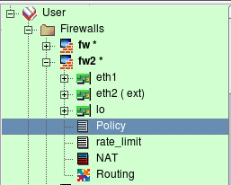
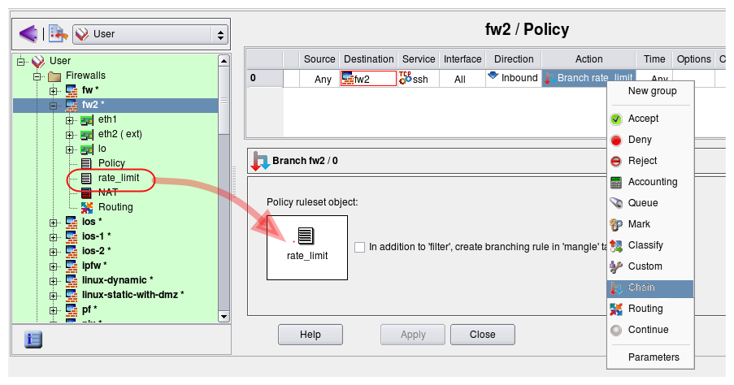
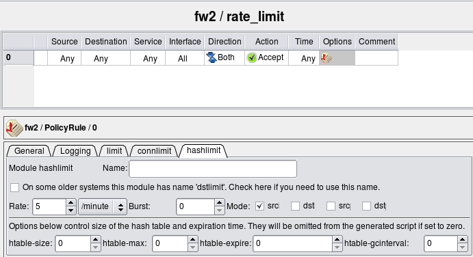
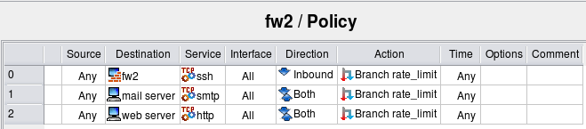
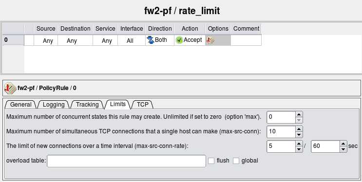
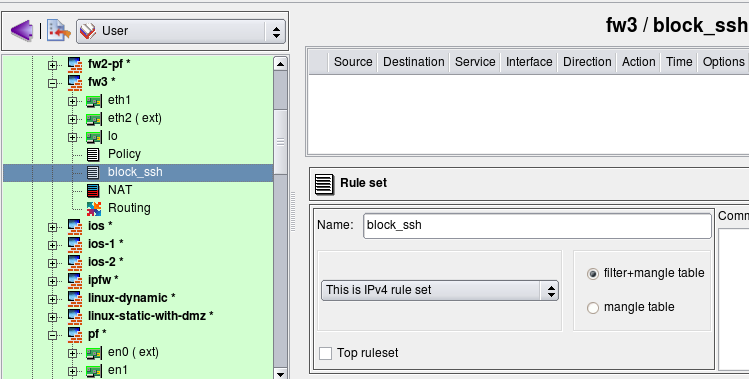
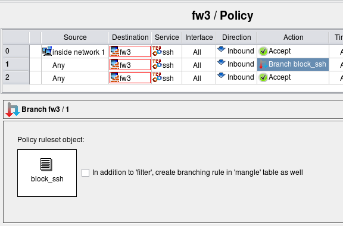

http://www.fwbuilder.org
| Author: vadim@fwbuilder.org http://www.fwbuilder.org |
This article continues the series of articles on Firewall Builder, a graphical firewall configuration and management tool that supports many Open Source firewall platforms as well as Cisco IOS access lists and Cisco ASA (PIX). Firewall Builder was introduced on this site earlier with articles Getting Started With Firewall Builder, Using Firewall Object In Firewall Builder. Firewall Access Policy Rulesets, Part 1. Firewall Access Policy Rulesets, Part 2.
This article continues with examples of Access Policy rules and demonstrates how branching rules can be built.
More information on Firewall Builder, pre-built binary packages and source code, documentation can be found on the project web site at http://www.fwbuilder.org/. Numerous examples of iptables, pf and other rules are available in Firewall Builder Users Guide. Follow Firewall Builder Project Blog for announcements and articles on all aspects of using Firewall Builder.
Many firewall platforms support mechanism by which control can be passed from one group of rules to another, much like in programming languages control can be passed to a subroutine. The rule set that gets control in such operation can then make final decision about the packet and accept or deny it, or it can return control back to the rule set that was running before. Firewall Builder provides the same mechanism using branching action that is called "Chain" for iptables firewalls and "Anchor" for PF firewalls to reuse familiar the names using in iptables and pf respectively.
Platform-specific action names "Chain" and "Anchor" will disappear in Firewall Builder v4.0. The name of the action that creates a branch in the rule set processing sequence will be just "Branch" regardless of the chosen target firewall platform.
Branching rules can be used to create optimized rule sets or to improve readability or both. Consider example shown in the following screenshot:
Firewall fw2 has two rule sets: "Policy" and "rate_limit". I am going to demonstrate how the second rule set can be used to rate limit packets that match different rules in the main rule set "Policy".
Article "Firewall Access Policy Rulesets, Part 4" demonstrated how to add policy rule set object to the firewall.
Lets create a rule to match ssh sessions to the firewall and instead of accepting or dropping them right away, pass control to the rule set "rate_limit" that will accept them only if they are not opened too fast. First, create this rule and choose action "Chain", then double click on the action and drag rule set object "rate_limit" into the well in the action dialog as shown in the screenshot:
Now we can configure rate limiting rule in the "rate_limit" rule set. I am going to use iptables module "hashlimit" to configure rather sophisticated rate limiting. When I recreate the same example for PF below, the options will look different.
Here is iptables script generated by the program for these rules:
# Rule 0 (global)
#
$IPTABLES -N rate_limit
$IPTABLES -A INPUT -p tcp -m tcp --dport 22 -j rate_limit
# ================ Table 'filter', rule set rate_limit
#
# Rule rate_limit 0 (global)
#
$IPTABLES -A rate_limit -m state --state NEW \
-m hashlimit --hashlimit 5/minute --hashlimit-mode srcip \
--hashlimit-name htable_rule_0 -j ACCEPT
Those familiar with iptables will notice that Firewall Builder created user-defined chain with the name of the second rule set ("rate_limit") and used "-j" option to pass control to it from the top-level rule.
Branching from a single rule is not very interesting. I could just use the same options with the rule #0 in the top level Policy rule set and get the same result, except instead of the user defined chain "rate_limit" this all would have been done in the same iptables command. However branching to a dedicated rule set becomes more useful if I want to use the same rate limiting to control access to several servers behind the firewall on entirely different protocols. Here is new example:
Here is how generated iptables script looks like:
# ================ Table 'filter', rule set Policy
#
# Rule 0 (global)
#
$IPTABLES -N rate_limit
$IPTABLES -A INPUT -p tcp -m tcp --dport 22 -j rate_limit
#
# Rule 1 (global)
#
$IPTABLES -A FORWARD -p tcp -m tcp -d 192.168.1.100 --dport 25 -j rate_limit
#
# Rule 2 (global)
#
$IPTABLES -A FORWARD -p tcp -m tcp -d 192.168.1.200 --dport 80 -j rate_limit
# ================ Table 'filter', rule set rate_limit
#
# Rule rate_limit 0 (global)
#
$IPTABLES -A rate_limit -m state --state NEW \
-m hashlimit --hashlimit 5/minute --hashlimit-mode srcip \
--hashlimit-name htable_rule_0 -j ACCEPT
Here are three iptables rules that match different addresses and services but pass control to the same chain "rate_limit". Now if I need to tune my rate limiting parameters for all destinations, I can do it in one place instead of three.
The rule #0 in the "rate_limit" rule set matches packets only if they come at the rate no more than 5 per minute per source IP address. Packets that match these criteria will be accepted, but those that don't will not match the rule. Since this rule is the last in the branch rule set, control will return to the top level and firewall will continue examining the packet with rules below the one that passed control to "rate_limit" rule set. Eventually it may hit the "catch all" rule and get dropped, but more complex policies may do something else with these packets such as try different rate limiting criteria or mark them for traffic shaping.
Action that creates a branch is available in Firewall Builder only if target firewall platform provides some kind of mechanism to support it. In iptables it is user-defined chains, in PF it is anchors. Unfortunately branching can not be implemented in Cisco IOS access lists and PIX. Lets try to recompile the same rules for PF. First, we'll need to change rate limiting parameters because its implementation in PF is different from that in iptables.
I am using the same three rules in the main Policy to rate limit connections to the firewall itself and two servers behind it. Generated PF config is split so that main policy rules are in the file "fw2-pf.conf" and rules for the ruleset "rate_limit" are in the file "fw2-pf-rate_limit.conf". When configuration with multiple rule sets is compiled for PF, each new branch rule set has its own separate file with the name composed from the name of the firewall object and the name of the rule set object.
File fw2-pf.conf:
# Tables: (1)
table <tbl.r9999.d> { 192.0.2.1 , 192.168.1.1 }
# Policy compiler errors and warnings:
#
# Rule 0 (global)
#
anchor rate_limit in inet proto tcp from any to <tbl.r9999.d> port 22
#
# Rule 1 (global)
#
anchor rate_limit inet proto tcp from any to 192.168.1.100 port 25
#
# Rule 2 (global)
#
anchor rate_limit inet proto tcp from any to 192.168.1.200 port 80
File fw2-pf-rate_limit.conf:
# Tables: (0) # Policy compiler errors and warnings: # # Rule rate_limit 0 (global) # pass quick inet from any to any keep state ( max-src-conn 10, max-src-conn-rate 5/60 )
Firewall Builder also generates a shell script to load these rules. The script is in the file with the name the same as the name of the firewall, with extension ".fw":
Here is the code that loads rules in the file fw2-pf.fw:
$PFCTL -f ${FWDIR}/fw2-pf.conf || exit 1
$PFCTL -a rate_limit -f ${FWDIR}/fw2-pf-rate_limit.conf || exit 1
Rules from the file "fw2-pf-rate_limit.conf" are loaded into anchor "rate_limit".
Branch rule sets created in the Firewall Builder GUI get translated into user-defined chains (iptables) or anchors (pf) in the generated configuration. It is not required however that you put any rules in this branch rule set. If it is left empty, it won't make packet checks and return back to the top level rule that called it right away. Such empty rule set can be very useful if you populate it with rules using some external script after firewall policy has been loaded. In the following example I use this idea to add firewall policy rules dynamically to block ssh scanners. The goal is to build policy rules to do the following:
This policy is rather permissive but it can easily be modified to suite more strict security requirements.
I start with an existing firewall policy. The rules I am going to add to block ssh scans do not depend on other rules in the policy. First, I create a new policy rule set with name "block_ssh". This rule set is not the "top ruleset", so generated iptables rules will be placed in the chain "block_ssh". I do not add any rules here. Rules will be added to this chain by an external script.
Create rule #0 in the main policy to permit ssh to the firewall from internal network, then another one where the destination the firewall itself, the service is "ssh", the direction "Inbound" and action is "Chain". Open the action in the editor by double-clicking on it, then drag the object representing rule set "block_ssh" into the well in the action editor panel. The idea is to first permit ssh to the firewall from internal net (rule #0), but for attempts to connect to the firewall on ssh port from other sources pass control to chain "block_ssh". If that chain does not block the ssh session, the next rule #2 permits it.
Here is what the iptables commands generated for rules 0-1 look like. Note that although the script creates chain "block_ssh", it does not put any rules in it.
# ================ Table 'filter', rule set Policy
# Policy compiler errors and warnings:
#
# Rule 0 (global)
#
$IPTABLES -A INPUT -p tcp -m tcp -s 192.168.1.0/24 \
--dport 22 -m state --state NEW -j ACCEPT
#
# Rule 1 (global)
#
$IPTABLES -N block_ssh
$IPTABLES -A INPUT -p tcp -m tcp --dport 22 -j block_ssh
#
# Rule 2 (global)
#
$IPTABLES -A INPUT -p tcp -m tcp --dport 22 -m state --state NEW -j ACCEPT
I am using swatch to watch the log and add iptables rules with addresses of scanners to the chain "block_ssh". The screen shot below shows the contents of the swatch config file /root/.swatchrc. This configuration makes swatch detect log lines added by ssh when an attempt is made to log in using an invalid user account or invalid password. Swatch then runs script /root/swatch/block_ssh_scanner.sh.
# cat /root/.swatchrc watchfor /sshd\[\d+\]: Failed password for invalid user (\S+) from (\S+)/ echo bold exec "/root/swatch/block_ssh_scanner.sh $2" watchfor /sshd\[\d+\]: Failed password for (\S+) from (\S+)/ echo bold exec "/root/swatch/block_ssh_scanner.sh $2" watchfor /sshd\[\d+\]: Did not receive identification string from (\S+)/ echo bold exec "/root/swatch/block_ssh_scanner.sh $1" watchfor /sshd\[\d+\]: Invalid user (\S+) from (\S+)/ echo bold exec "/root/swatch/block_ssh_scanner.sh $2"
The following script adds an iptables rule to chain "block_ssh" and also adds the address of the scanner to the file /root/swatch/ssh_scan_addresses to avoid duplications in the future.
# cat /root/swatch/block_ssh_scanner.sh #!/bin/sh addr=$1 test -z "$addr" && exit 1 grep $addr /root/swatch/ssh_scan_addresses && exit 0 cmd="iptables -A block_ssh -s $addr -j DROP" echo "$cmd" >> /root/swatch/ssh_scan_addresses $cmd
Here is the command line you can use to start the swatch daemon. Add this command to the /etc/rc.d/rc.local script to start it when you reboot your machine.
/usr/bin/swatch --daemon --tail-file=/var/log/secure --use-cpan-file-tail </dev/null &
This method of blocking ssh scan attacks is effective but might be too "sharp". It will block access from legitimate machines outside your network as soon as you mistype your password even once. This can be dangerous because you'll block yourself until you either restart the firewall or remove the blocked address from iptables rules in chain "block_ssh". Ssh access to the firewall from the internal network is always permitted because of the rule #0, so this setup will not cut you off the firewall completely. Using ssh keys for authentication instead of the password when you log in from outside is a good way to avoid this problem.
This example was intended to demonstrate how branch rule set can be used in combination with external script that populates rule set. There are better ways to block ssh scanners, for example using iptables module "recent" which solves a problem of blocking legitimate client addresses after user mistypes the password. Module "recent" can block an address for a limited period of time, which should be enough for the ssh scanner to time out and go away, yet the user who mistyped their password will be able to log in again some time later. The shell script that adds iptables commands to the chain "block_ssh" or addresses to the module recent table can also be improved to only add them after they appear in the ssh log a few times to avoid blocking client addresses after single error entering password.
References: